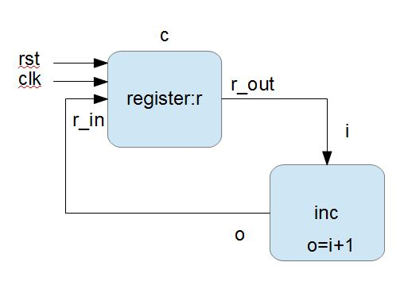

計數器模組
簡易計數器
簡易計數器：流程版
module counter(input clk, rst, output reg [2:0] q);
always @(posedge clk) begin
if (rst)
q = 3'b000;
else
q = q+1;
end
endmodule
module main;
reg clk;
reg rst;
wire [2:0] q;
counter DUT (.clk(clk), .rst(rst), .q(q));
initial
begin
$monitor("%4dns monitor: q=%d", $stime, q);
clk = 0;
rst = 1;
#100 rst = 0;
#1000 $finish;
end
always #50 begin
clk=clk+1;
end
endmodule執行結果
D:\oc\code>vvp counter
0ns monitor: q=x
50ns monitor: q=0
150ns monitor: q=1
250ns monitor: q=2
350ns monitor: q=3
450ns monitor: q=4
550ns monitor: q=5
650ns monitor: q=6
750ns monitor: q=7
850ns monitor: q=0
950ns monitor: q=1
1050ns monitor: q=2簡易計數器：方塊版

電路設計圖
檔案：counter_block.v
module inc(input [2:0] i, output [2:0] o);
assign o = i + 1;
endmodule
module register(input clk, rst, input [2:0] r_in, output [2:0] r_out);
reg [2:0] r;
always @(posedge clk) begin
if (rst)
r = 3'b000;
else
r = r_in;
end
assign r_out = r;
endmodule
module counter;
reg clk;
reg rst;
wire [2:0] c_in, c_out;
register c(clk, rst, c_in, c_out);
inc inc1(c_out, c_in);
initial
begin
$monitor("%4dns monitor: c.r=%d", $stime, c.r);
clk = 0;
rst = 1;
#100 rst = 0;
#1000 $finish;
end
always #50 begin
clk=clk+1;
end
endmodule執行結果
D:\oc\code>iverilog -o counter_block counter_block.v
D:\oc\code>vvp counter_block
0ns monitor: c.r=x
50ns monitor: c.r=0
150ns monitor: c.r=1
250ns monitor: c.r=2
350ns monitor: c.r=3
450ns monitor: c.r=4
550ns monitor: c.r=5
650ns monitor: c.r=6
750ns monitor: c.r=7
850ns monitor: c.r=0
950ns monitor: c.r=1
1050ns monitor: c.r=2程式計數器
程式計數器：流程版
檔案：pctick.v
module pcTick(input clock, reset, output reg [31:0] pc,
output reg [2:0] tick);
always @(posedge clock) begin
if (reset)
begin
pc = 0;
tick = 0;
end
else begin
tick = tick+1;
if (tick == 6) begin
tick = 0;
pc = pc+4;
end
$monitor("%4dns %8x %1x", $stime, pc, tick);
end
end
endmodule
module main;
reg clock;
reg reset;
wire [2:0] tick;
wire [31:0] pc;
pcTick DUT (.clock(clock), .reset(reset), .pc(pc), .tick(tick));
initial
begin
clock = 0;
reset = 1;
#100 reset=0;
#2000 $finish;
end
always #50 clock=clock+1;
endmodule執行結果：
D:\Dropbox\Public\oc\code>iverilog -o pctick pctick.v
D:\Dropbox\Public\oc\code>vvp pctick
150ns 00000000 1
250ns 00000000 2
350ns 00000000 3
450ns 00000000 4
550ns 00000000 5
650ns 00000004 0
750ns 00000004 1
850ns 00000004 2
950ns 00000004 3
1050ns 00000004 4
1150ns 00000004 5
1250ns 00000008 0
1350ns 00000008 1
1450ns 00000008 2
1550ns 00000008 3
1650ns 00000008 4
1750ns 00000008 5
1850ns 0000000c 0
1950ns 0000000c 1
2050ns 0000000c 2程式計數器：方塊版
檔案：pctick_block.v
module pcTick(input clock, reset, input [31:0] pc_in, output [31:0] pc_out, output reg [2:0] tick);
reg [31:0] pc;
always @(posedge clock) begin
if (reset) begin
pc = 0;
tick = 0;
end else begin
tick = tick+1;
if (tick == 6) begin
tick = 0;
pc = pc_in;
end
$monitor("%4dns %8x %1x", $stime, pc, tick);
end
end
assign pc_out = pc;
endmodule
module alu(input [31:0] a, input [31:0] b, input [3:0] op, output reg [31:0] y);
parameter [3:0] PASS=4'h2, ADD=4'h3, SUB=4'h4, MUL=4'h5, DIV=4'h6, AND=4'h8, OR=4'h9, XOR=4'hA, SHL=4'hE, SHR=4'hF; // ALU 運算碼
always@(a or b or op) begin
case(op)
PASS:y = a;
ADD: y = a + b;
SUB: y = a - b;
MUL: y = a * b;
DIV: y = a / b;
AND: y = a & b;
OR : y = a | b;
XOR: y = a ^ b;
SHL: y = a << b;
SHR: y = a >> b;
endcase
end
endmodule
module main;
reg clock;
reg reset;
wire [2:0] tick;
wire [31:0] pc_in, pc_out;
pcTick DUT (clock, reset, pc_in, pc_out, tick);
alu alu0(pc_out, 4, alu0.ADD, pc_in);
initial
begin
clock = 0;
reset = 1;
#100 reset=0;
#2000 $finish;
end
always #50 clock=clock+1;
endmodule執行結果：
D:\Dropbox\Public\oc\code>iverilog -o pctick_block pctick_block.v
D:\Dropbox\Public\oc\code>vvp pctick_block
150ns 00000000 1
250ns 00000000 2
350ns 00000000 3
450ns 00000000 4
550ns 00000000 5
650ns 00000004 0
750ns 00000004 1
850ns 00000004 2
950ns 00000004 3
1050ns 00000004 4
1150ns 00000004 5
1250ns 00000008 0
1350ns 00000008 1
1450ns 00000008 2
1550ns 00000008 3
1650ns 00000008 4
1750ns 00000008 5
1850ns 0000000c 0
1950ns 0000000c 1
2050ns 0000000c 2